福岡かえる展５が閉幕！長野松本市と同時開催成功！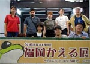 【福岡発Ｅ３福岡かえる展５実行委員長】今回は長野との同時開催が実現しました。松本なわてまつりの皆さんお疲れさまでした。今回実行委員長をして思いましたが、本当に周りの方々に支えられたかえる展でした。ホントにもう（遠い目）。未熟なカエラーで申し訳ございません。その辺りは梅雨の雨にケロケロ〜っと流して頂いて… かえる展の何が大変って、準備よりも設営よりもその後の「日常復帰」です。皆様、適度にカエルを抜きつつ溜めつつ生活にお戻り下さいませ。 会場を創って下さった方々、会場に来て下さった方々、来られなくてもバナーを貼って告知して下さった方々、掲示板やメールで応援のお言葉を下さった方々、いつの日か会場に！と心に蛙愛を持っている方々。皆さん本当に感謝しております♪ それでは。またカエルが目覚める日まで♪ありがとうございました！
全国のカエル化に邁進せよおお！【全国かえる奉賛会】えー。この度の長野県とともに開催したカエル展は、全国をカエル化するという大きな流れの中で、画期的なできごとでしたあああ。大王も素顔をさらして演説します。一人では心細いので、となりにカエルガールがおりますがああ、というわけなので、全国のカエラー諸君！来年は、カエル先進地の福岡、長野に続いて、各地でカエル展を展開しようではないかああああああ。市民有志の奮起を期待するものなりい。
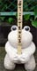 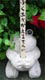 かえる大明神、カエル座敷にカエル！【福岡発げこげこ大王七世直筆】かえる展５終了とともに、小郡市のカエル寺からおこしいただいていた『カエル大明神』を、寺におもどしするため、スタッフ５人で出かけました。
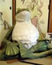 期間中、会場入り口で狛犬のように、守ってくれていた、二匹の石カエルたちも寺に戻って、静かな日々を送ることになります。大明神、石かえる、ありがとうねええ。また会おうなあ。
大明神が寺にやってくると、寺にいた人々から『カエルが戻ってきたああ』と歓声があがりました。すっかり寺になくてはならないカエルになっていたんですねえ。
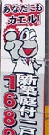 大王一行、福岡県南部のカエル化を確認！全国のカエラーは福岡に続け！【全国かえる奉賛会】かえる寺にでかけた足で、福岡県南部のカエル化の進行を確かめに、お忍びで街を回りました。その結果、福岡県南部のカエル化は想像以上に進んでいることが分かりました。《その１》：１６８０万円あなたもカエル！国道を走っていると、いきなり、カエルな看板だ。１６８０万円で庭付き一戸建てがカエルんだぞおおおお。いますぐに福岡県に大量移住して、ガーデニングでカエルを庭におきまくろうではないかあああ。
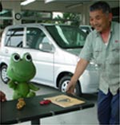 《その２》：自動車販売会社受け付けはケロちゃん！自動車販売会社のショールーム受付には、ケロちゃんが座っていた。薬局が廃業したときに一緒に捨てられようとしていたケロちゃんを救ったのが、写真右の社長だ。『最初は、誰かに譲ろうかねえええって、思うとったけど、こうして毎日みていると、かわゆううしてから。今は受け付けにしとるですたい』 いいぞおお、ケロちゃん、農業用自動車を売りまくってくれええええ。
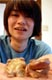 《その３》：陶芸青年はカエル作品！さらに山間部の喫茶店『楓』にでかけると、そこに商品を納めに来ていた愛媛県の陶芸家は、なんとカエルの陶芸納品していたのであるううう。なんという偶然であろうかああああ。
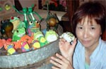 《その３》：山の中にカエル喫茶がああ！！しかも、その喫茶店の奥さんは、カエルグッズ買いまくりのカエラーだったのであるううう。店の中にも、カエルがたくさんのコーナーを作っていた。
福岡かえる展５の初日にも来てくれたカエラーであったあ。
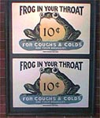 東京ディズニーシー発：かえる様が風邪に効く？！【千葉発ケロリカ同志記者】先日東京ディズニーシーで、かえる様のポスターを見掛けましたのでお知らせ致します。それにしても、謎めいた内容のポスターで御座居ます。風邪を引いて咳が出るときにかえる様を呑み込め、とでもいうのでしょうか。
それとも、風邪や咳をかえる様のせいだとでも言いたいのでしょうか。。
カエルマーク入りカフェオレ発見！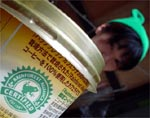 【神奈川発ひなひな同志記者】１か月くらい前に、ファミリーマートでかえるのマークのついたカフェオレを発見したのですが、その後見かけなくなってしまいました。先日福岡かえる展に行った際にも聞いてみたのですが大王も見たことがないとのこと。やはりもう製造されてないのか… しかし、かえる展近くのファミリーマートへお昼御飯を買いに行くと、なんとそのカフェオレが売ってるではないですか！そして私は即座に購入し、大急ぎで会場に戻り大王に報告をしたのでした。因にこの日は６月６日かえるの日。まるでかえる展関係者に買われるのを待っていたかのようです。 で、このかえるのマークはアメリカの環境保護団体が定めた「環境にやさしい生産方法」で生産されたコーヒーにつけられるそうです。 その後、地元のファミリーマートでも再び売られているのを発見。どうやら単に品薄だっただけのようです(^^;
カエルキャラ饅頭のサンプルを販売！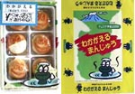 【静岡発（株）ほさか様】弊社は静岡県沼津で観光みやげを製造、販売している会社（株）ほさかです。２０００’伊豆新世紀創造祭で販売していました＜わかがえるまんじゅう＞のサンプルを必要とするひとがいれば、おゆずりします。かなり製造費がかかっているので、無料とはいなかいのですが。￥２０００で結構です。包装紙も付けます。 サンプルは伊豆新世紀創造祭では販売していない非売品です。日本に５３個のみ実在しているだけです。宜しくお願いいたします。申し込みはこちらに カエルサボテン九期発売開始！【ケロ天市場】ここにひっそり書いておきます。これを見た人は幸運だぞお。本日、ケロ天市場で『カエルサボテン』が発売になりました。
福岡マリンワールドでカエル展開催中！【福岡発（株）けろゆき同志記者】４／１８〜８／３１までマリンワールド海の中道で開館１５周年記念 『カエル展』と言う大イベントが行われています。日本をはじめとする世界の珍しいカエルが一同に会し、カエルサミット状態です。さらに〜もっと知りたいカエルのヒミツ〜と言うコーナーではカエルの気持ちになって楽しく学ぶ事もできます。 私は２回行けば元が取れる年間フリーパスを購入し、休日の度にカエル達に会いに行っています(⌒−⌒) 【全国かえる奉賛会】そうなんぢゃよお。自分達のかえる展５の開催準備で紹介がすっかり遅れていたが、実は、４月から、同じ福岡市の水族館マリンワールドで『かえる展』が開催されているのであるう。期間中にいってみたいなあ。
|
メールマガジン登録
メールマガジン解除
Powered by


かえる古新聞過去に取り上げた記事を見出し付きで一覧したい人は、ここをクリック◆創刊号を見る◆先週号を見る◆話題の号を見る◆かえる新聞の昔を読む
|
私も入っています。。全国かえる奉賛会
大王様に会うには、このバナーをクリック。ずっと奥に写真館があるぞ。全国かえる奉賛会に入会するには、自分のホームページのどこかに、下の部分を追加するとバナーがリンク付きで表示されるぞ。どんどん入会しましょー |


|